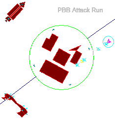
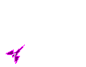
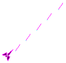
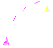
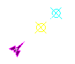

Technological
Developments

Technological
Developments are discovered and manufacured by your Tech Centers. The more
tech centers you have, the better your chances of developing a new technology
to install in your fighter. When a new upgrade is available, you will be
notified audibly and the tech centers on your planets will activate their
beacons. By landing your fighter at a base or starbase with a tech center,
the upgrade will automatically be installed on your fighter. If another
development is ready before you have a chance to acquire the previous one,
the prior upgrade will be installed on another ship or facility in your
empire. Freighters, Starbases, and Bases can receive upgrades but will
only recieve weapons upgrades. The technologies that can be discovered
are listed below.
Energy Weapons

Cannon
- While not a new development this has been included here to preserve continuity.
The Standard Type I Energy Cannon is mounted on all fighters, freighters
and both planetary and orbital defense garrisons. The energy cannon is
charged by your fighters gravity drive so has an unlimited capacity for
firing. A hit by a cannon's energy bolt does one point of damage.
 Heavy
Cannon
- Able to pack a punch, the Type II Heavy Energy Cannon is twice as destructive
as the Type I Energy Cannon. Crippling opponents is easy with a weapon
that does two points of damage per hit. This versatile weapon is excellent
against targets on the ground as well as in space. Heavy Energy Cannons
can be installed on fighters, freighters or planetary and orbital defense
facilities.
Heavy
Cannon
- Able to pack a punch, the Type II Heavy Energy Cannon is twice as destructive
as the Type I Energy Cannon. Crippling opponents is easy with a weapon
that does two points of damage per hit. This versatile weapon is excellent
against targets on the ground as well as in space. Heavy Energy Cannons
can be installed on fighters, freighters or planetary and orbital defense
facilities.
 Pulse
Laser - Pulse lasers fire intense pulses
of highly concentrated photons. Its beams of energy will inflict one point
of damage. These yellow bolts are fast so lead time is low. Good against
all types of enemy units.
Pulse
Laser - Pulse lasers fire intense pulses
of highly concentrated photons. Its beams of energy will inflict one point
of damage. These yellow bolts are fast so lead time is low. Good against
all types of enemy units.
 Beam
Laser - A firey red finger of death, the
beam laser punches right through everything it touches. Though it only
does one point of damage, its ability to inflict damage on multiple targets
per shot makes this a weapon any jockey would love to have at his fingertips.
Though good in a dog fight, the beam laser excels at inflicting massive
damage to planetary facilities. A well executed low-orbit attack run blazing
fire from the skies can efficiently erase a planetary population.
Beam
Laser - A firey red finger of death, the
beam laser punches right through everything it touches. Though it only
does one point of damage, its ability to inflict damage on multiple targets
per shot makes this a weapon any jockey would love to have at his fingertips.
Though good in a dog fight, the beam laser excels at inflicting massive
damage to planetary facilities. A well executed low-orbit attack run blazing
fire from the skies can efficiently erase a planetary population.
 Plasma
Bolt
- Also called the shield penetrator, these
intense bolts of concentrated heated gas have been designed to penetrate
shields and damage the ship inside. Your shields will be useless against
an enemy equipped with one of these. A bolt of plasma will inflict one
point of damage on an opponent.
Plasma
Bolt
- Also called the shield penetrator, these
intense bolts of concentrated heated gas have been designed to penetrate
shields and damage the ship inside. Your shields will be useless against
an enemy equipped with one of these. A bolt of plasma will inflict one
point of damage on an opponent.
Projectile Weapons

Rockets
- A warhead with an engine. Standard issue dumfire torpedos are patriotically
painted the empirical color of your ship. Use your ships velocity and heading
to lay a line of these across a planet. Extra skill is required to take
out a moving target with these, but they can make an effective ship-to-ship
weapon in the right hands.

Missiles
- The guided missile is the latest in rocket technology. Equipped with
computer controlled identification systems, the guided missile will attempt
to track and destroy the nearest enemy indicated on your Status Indicators.
A proper attack angle is vital to compensate for the missiles poor maneuverability.
The guiding system is able to target either ground or space targets.

Planet
Buster
Bombs
- Planet Buster Bombs, or PBBs, were developed by the Asteroid Conglomeration
of Fomelhaut II during the Fomelhaut Ring Wars of 2099. The PBB is an unpropelled
cluster bomb used to destroy planetary facilities. When launched, a PBB
canister activates a delay timer in the device. Proper timing is critical.
When the bomb explodes, a cluster of bombs bursts out doing damage to ships
and structures alike. Due to the timing involved, this device is difficult
to use against moving opponents. Reports have come in from Gamma Quadrant,
however, of a couple of hot shot pilots who have achieved remarkable success
using bombs to enforce a freighter blockade.
Performance
 Rapid-Fire
- Advances in computer assisted gunnery enable your guns to fire repeatedly.
Just hold your trigger finger down and go for glory! Woe is the planet
faced with a fighter equipped with rapid-fire beam lasers.
Rapid-Fire
- Advances in computer assisted gunnery enable your guns to fire repeatedly.
Just hold your trigger finger down and go for glory! Woe is the planet
faced with a fighter equipped with rapid-fire beam lasers.
 Fast
Turn Indicator - New fast response side
thrusters enable your fighter to turn on a dime and out-maneuver your enemy...or
even dodge his missiles! When Fast Turn is installed, a green indicator
light will glow on your Status Indicators.
Fast
Turn Indicator - New fast response side
thrusters enable your fighter to turn on a dime and out-maneuver your enemy...or
even dodge his missiles! When Fast Turn is installed, a green indicator
light will glow on your Status Indicators.
Shields
 Ion
Shield - A bright white circle around
your fighter indicates that Ion shields have been installed on your ship.
The Ion Sphere creates a powerful field of energy around your ship which
will absorb up to 8 points of damage before overloading.
Ion
Shield - A bright white circle around
your fighter indicates that Ion shields have been installed on your ship.
The Ion Sphere creates a powerful field of energy around your ship which
will absorb up to 8 points of damage before overloading.
 Singularity
Shields - The Livingston Singularity Shell
was developed by Bingham Livingston Laboratories on Chronos III while working
researching new mining technique. Although Dr. Livingston missed in his
attempt at matter annihilation, what he created made him a wealthy man.
When a Singularity Shield is installed on your fighter, a bright cyan shell
appears around your ship. This powerful shield can withstand 12 points
of damage and has the added ability of "turning" the enemy bullets
in space and time. This gives the appearance of the enemy bullets "bouncing"
off your shields. When a munition "bounces", it returns to a
point in time when it had full momentum, thus, a cannon shell or rocket
could travel twice its maximum distance by "bouncing" off a Singularity
shield. Guided missiles will bounce off but lose there guiding and become
rockets (an unguided missile). Beam lasers are simply absorbed and do not
"bounce".
Singularity
Shields - The Livingston Singularity Shell
was developed by Bingham Livingston Laboratories on Chronos III while working
researching new mining technique. Although Dr. Livingston missed in his
attempt at matter annihilation, what he created made him a wealthy man.
When a Singularity Shield is installed on your fighter, a bright cyan shell
appears around your ship. This powerful shield can withstand 12 points
of damage and has the added ability of "turning" the enemy bullets
in space and time. This gives the appearance of the enemy bullets "bouncing"
off your shields. When a munition "bounces", it returns to a
point in time when it had full momentum, thus, a cannon shell or rocket
could travel twice its maximum distance by "bouncing" off a Singularity
shield. Guided missiles will bounce off but lose there guiding and become
rockets (an unguided missile). Beam lasers are simply absorbed and do not
"bounce".
When shields become low, friendly starbases and
planetary facilities are equipped with standard recharge units which will
quckly restore your shields to factory original. If your shields are completely
gone however, the control module burns out and you have to wait for your
Tech Centers to build you a new one. It's been rumored that a new shield
penetrating weapon is being developed which is unaffected by either Ion
or Singularity shields.